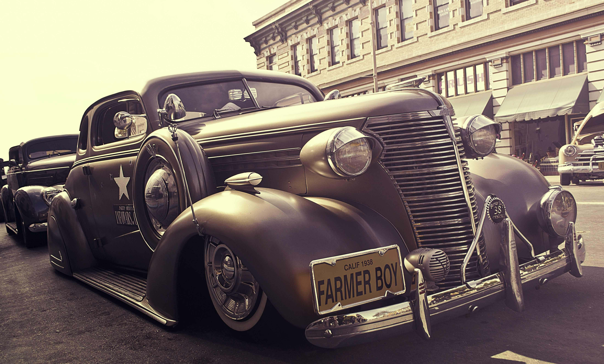

Img z-index

1939 hudson car The Hudson Motor Car Company made Hudson and other branded automobiles in Detroit, Michigan, U.S., from 1909 until 1954.
1963 jaguar S-Type The Jaguar S-Type is a luxury saloon car produced by Jaguar Cars in the United Kingdom from 1963 to 1968.
1950 Volkswagen Type 2 The Volkswagen Transporter, initially the Type 2, is a range of light commercial vehicles, built as vans, pickups, and cab-and-chassis variants, introduced in 1950 by the German